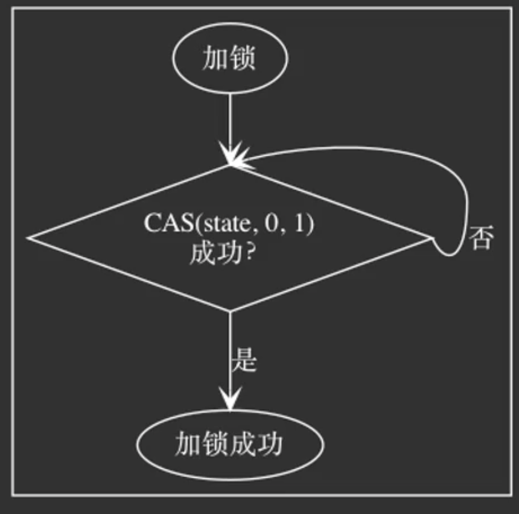
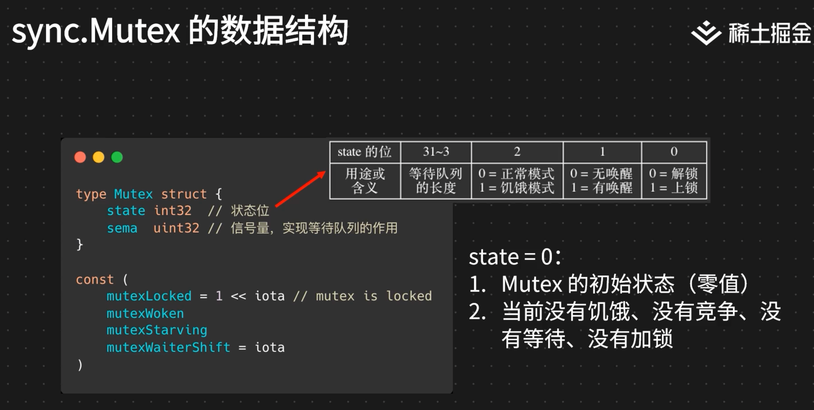
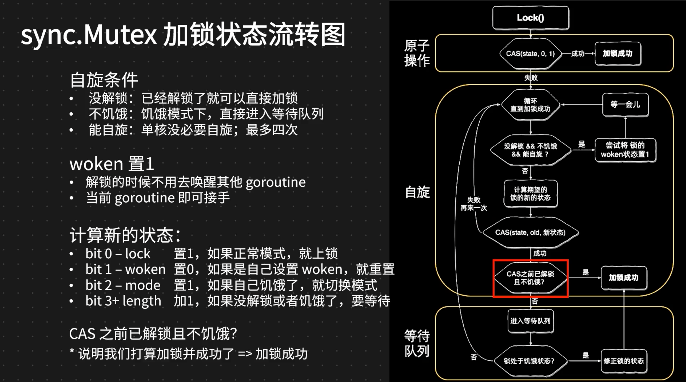
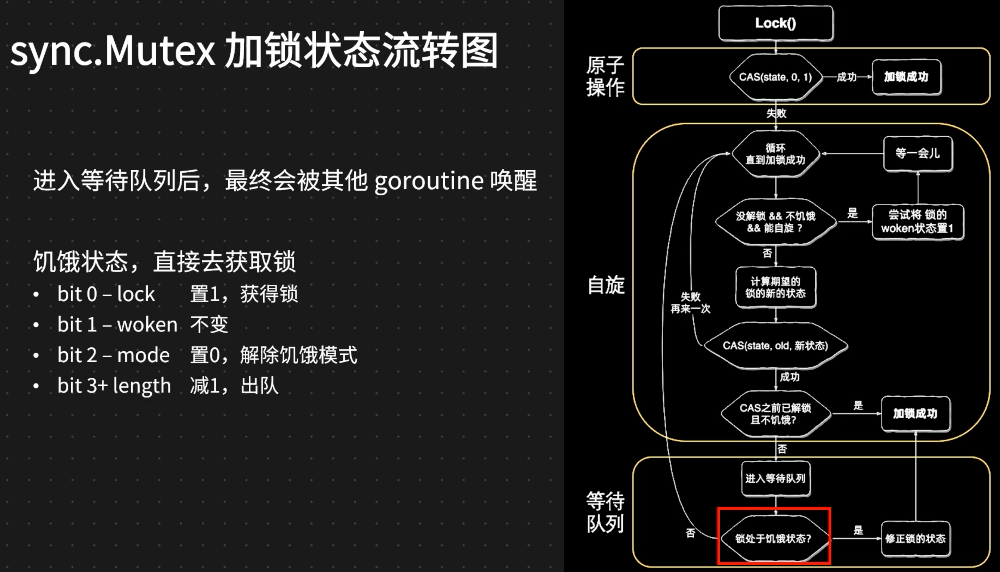
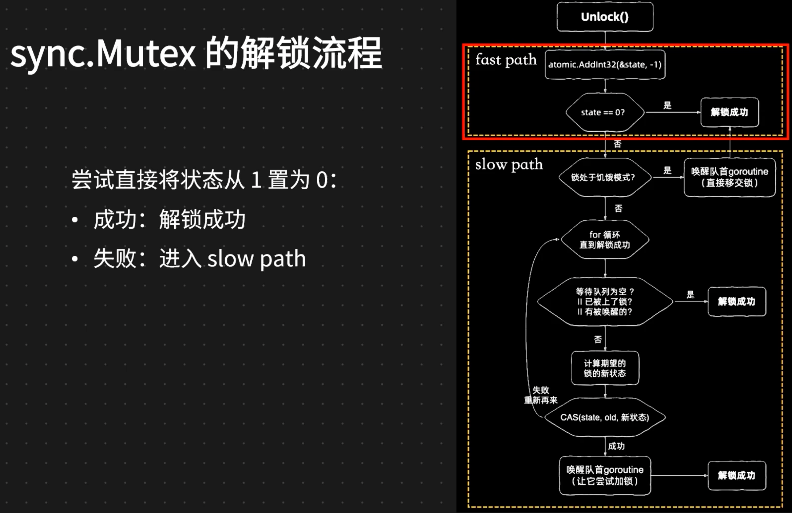
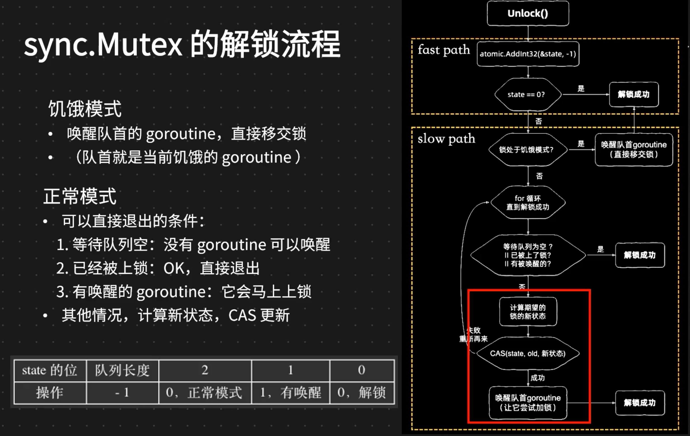

课程链接：Go 语言原理与实践
做个简单的记录
开篇词｜扬帆起航，开启 Go 语言学习之旅
没什么可记录的，这个讲师吴迪是公司Kitex的作者，平时在头条圈貌似很活跃，很喜欢发言，总有种拽拽的感觉，看到真人的形象感觉和想象的差距还有点大
Go 中内置数据结构：slice 原理
Golang里面只有值传递
函数传参会复制，数组会有复制的开销
得到Go程序的汇编代码的方法
go tool compile -N -l -S once.go
go tool compile -N -l once.go
go build -gcflags -S once.go
Go 中内置数据结构：slice 实践
slice容量增长的规则：
cap < 1024, 每次x2
cap >= 1024, 每次x1.25内存分配效率
1
2
3
4
5
6
7
8
9
10
11
12
13
14
15
16
17// 效率s3 > s2 > s1
// slice := make([]int, len, cap)
var s1 []int
for i := 0; i < 10000; i++ {
s1 = append(s1, i)
}
s2 := make([]int, 10000)
for i := 0; i < 10000; i++ {
s2 = append(s2, i)
}
s3 := make([]int, 0, 10000)
for i := 0; i < 10000; i++ {
s3[i] = i
}函数内修改slice参数可能会和原slice脱离
1
2
3
4
5
6
7
8
9
10
11
12
13
14
15
16func modifySlice(s []int) {
s = append(s, 2048)
s[0] = 1024
}
func main() {
var s1 []int
for i := 0; i < 3; i++ {
s1 = append(s1, i)
}
// s1 = [0, 1, 2]
modifySlice(s1)
// s1 = [1024, 1, 2]
// 函数内append没触发cap变动，则会修改到原slice
// 函数内append触发cap变动，则内外slice会完全不同了
}空slice转json
1
2
3
4
5
6
7var s1 []int
b1, _ := json.Marshal(s1)
// null
s2 := []int{}
b2, _ := json.Marshal(s2)
// []Bounds Checking Elimination
1
2
3
4
5
6
7
8func bce(s []int) {
_ = s[3] // 编译器会去除0，1，2下标是否存在的检查，会使得后面的取值更快
i := 0
i += s[0]
i += s[1]
i += s[2]
i += s[3]
}
Go 中内置数据结构：map、channel
- map作为函数参数，在函数内修改时会修改原map。和slice对比。
- map的元素不能取地址，因为它会变。
&m[1] - map删除key不会自动缩容
- channel是有锁的
- channel底层是个ringbuffer
- channel调用会触发调度
- 高并发、高性能编程不适合使用channel
- buffered channel 会发生两次copy
- send goroutine -> buf
- buf -> receive goroutine
- unbuffered channel 会发生一次copy
- send goroutine -> receive goroutine
- unbuffered channel receive 完成send后才返回
- for + select closed channel 会造成死循环
1
2
3
4
5
6
7
8
9
10
11
12
13ch := make(chan int)
go func() {
ch <- 1
close(ch)
}()
for {
select {
case i := <-ch:
// ...
default:
break
}
}
通用性能优化技巧
- 使用strings.Builder代替bytes.Buffer，少一些copy，效率更好
- string从设计上是immutable的，所以如果要从slice byte强转，必须保证底层的slice byte不会被修改也不会被回收（如sync.Pool），因为本质上是使用了同一段内存来避免内存拷贝
- 同样的，string由于设计上是immutable的，所以如果是强转到slice byte，不可以对slice byte进行写操作，否则行为未定义
- 如果不完全了解以上操作可能带来的影响以及后果，一定不要使用
- 函数返回值比返回指针可能更快，减少内存逃逸，减小GC压力
- atomic代替锁，锁更应该使用在需要锁一段代码的时候，而不是一个变量
1
2
3
4
5
6
7
8
9
10
11
12
13
14
15
16
17
18
19type counter struct {
i int32
m sync.Mutex
}
func addOne(c *counter) {
c.m.Lock()
c.i++
c.m.Unlock()
}
// 这样更快
type counter struct {
i int32
}
func addOne(c *counter) {
atomic.AddInt32(&c.i, 1)
} - sync.Pool分配回收不应该跨goroutine
- 更快的json库，github.com/bytedance/sonic
锁的适用场景与最佳实践
- 并发读写string、map、slice、结构体都是不安全的
- 锁的性能问题
- 缩小锁的代码范围，注意所有分支都应覆盖解锁操作
- 减小锁的粒度，一把大锁->多个小锁，空间换时间
- 读写分离，sync.RWMutex，sync.Map
- 无锁化，利用原子操作atomic
锁的避坑指南与实现原理
- 锁是不能拷贝的，拷贝之后是新的锁。sync模块的各种数据结构都如此
- go vet命令可以对代码进行静态检查，有些非编译错误的问题可以检查到
- sync.Mutex不可重入，不能重复调用加锁
- atomic.Value数据取出来之后，不能保证数据并发安全，如果是一个map，必须从代码逻辑中保证这个数据不会出现并发问题
- race可以检测并发读写的问题
- go build -race …
- go run -race …
- go test -race …
- 性能开销很大，只在测试环境做
- 自旋锁，CAS持续尝试，成功为止
- runtime.Gosched()可以让出CPU时间片
- sync.Mutex实现    
内存管理的基础理论
- 分配与回收
- 引用计数
- 垃圾回收
- 识别存活对象
- 保存存活对象
- 清理垃圾对象
内存组织和堆上分配
todo
垃圾回收机制
todo
内存管理实践
内存管理数据获取
- GC日志
export GODEBUG=gctrace=1 - 标准库API
runtime.ReadMemStats - pprof
- Trace
内存逃逸条件
- 过大的变量
- 无法确定常量大小的slice分配
- 指针，map，slice类型返回值的变量
- 变量被closure捕捉
- 变量被map，slice，chan引用
调度循环的建立
- schedule函数的主要作用是将Goroutine调度到CPU上执行。调度循环指的是一个线程（或者说M）在整个生命周期中不断地在执行的流程，它不断地从Goroutine可运行队列获取Goroutine来运行。
- 调度循环则是一条首尾相接的调用“链路”：
schedule -> gogo -> g.fn -> goexit -> schedule，M一直在这条链路中运行，整个Go进程中有很多这样的“链路”在同时执行。
调度的协作与抢占机制
- 同步协作式调度：依靠被调度方主动弃权
- 主动用户让权：通过runtime.Gosched调用主动让出执行机会
- 主动调度弃权：执行栈分段时检查自身的抢占标记，决定是否继续执行
- 异步抢占式调度：依靠调度器强制将被调度方中断
- 被动监控抢占：当G执行时间过长时，sysmon会抢占G
- 被动GC抢占：当需要进行垃圾回收时，强制停止所有G